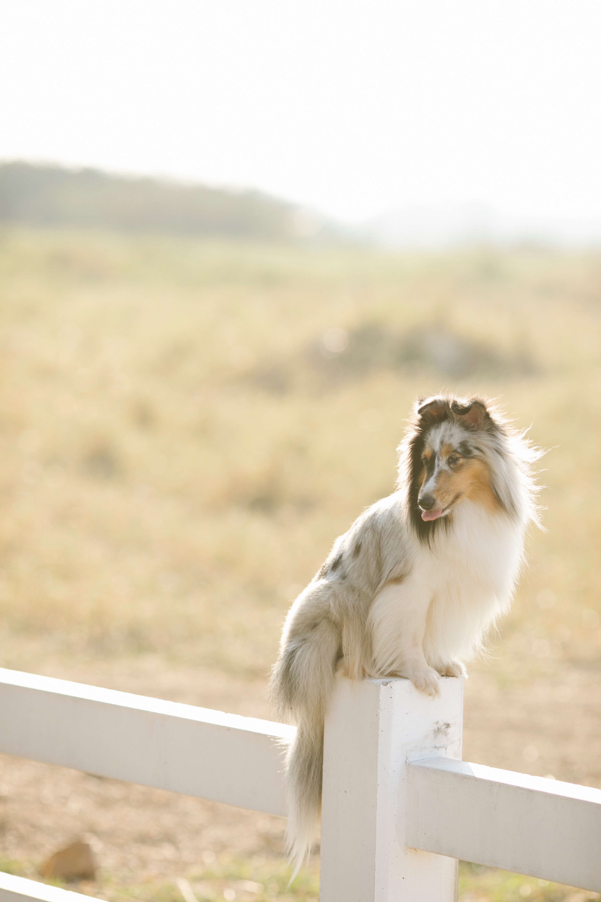

Schotse Collie
Herkomst
De Collie maakt een waardige, intelligente indruk waarbij een totale harmonie domineert. Zijn voornaamste kenmerk is zijn expressieve hoofd dat perfectie en een zekere mystieke ondoorgrondelijkheid uitdrukt. De zachte, iets schuin geplaatste ogen en de fraaie tip-oren dragen hier zeker toe bij. De Collie komt voor in de bekende "sable" kleur die varieert van lichtgoud tot diep mahonie, tricolor en blue merle. Witte typische Collie-aftekeningen zoals de kraag zijn toegestaan. Er zijn zowel langharige als kortharige Collies. De schofthoogte van de Collie ligt tussen de 51 cm en 61 cm. Het gewicht varieert van 18 kg tot 29,5 kg.Bron: HoudenVanHonden